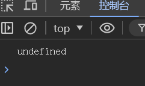

数据类型-未定义类型
-
什么情况下出现未定义类型
之生命变量，不赋值的情况下，变量的默认值为undefined,一般很少为某个变量赋值为undefined
-
查看数据类型可以使用typeof(变量名)
//只声明变量，未赋值，则默认就是undefined类型
let a
console.log(typeof(a))

开发场景
如果检测到自己定义好的变量是undefined就说明传入数据的时候有问题，方便排错
空类型
JavaScript中的null仅仅是一个代表“无”、“空”或“值未知”的特殊值
-
null和undefined的区别
- undefined表示没有赋值
- null表示赋值了，但是内容为空
-
null开发中的场景
官方解释:把null作为尚未创建的对象
白话:将来有个变量里面存放的是一个对象，但是对象还没有创建好，可以先给个null
let obj = null
console.log(obj+1) //输出为1，因为null表示空，什么都没有，注意JavaScript中的null是可以与数字进行运算操作的，这是历史遗留问题，和其他语言不同
console.log(undefined+1) //NaN undefined表示未定义，并不代表其为空，当然它与其它数据操作肯定是混乱的
检测数据类型
语法如下
let num1 = 10
console.log(typeof(num1)) //利用typeof(变量名) 就可以查看变量的类型,也可以不写小括号